Zennの「LLM」のフィード
フィード
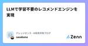
LLMで学習不要のレコメンドエンジンを実現 1
1
Zennの「LLM」のフィード
導入 こんにちは、株式会社ナレッジセンスの須藤英寿です。普段はエンジニアとして、LLMを使用したチャットのサービスを提供しており、とりわけRAGシステムの改善は日々の課題になっています。 本記事では、LLMを使用したレコメンドエンジン作成のフレームワークについて、簡潔に解説していきます。 サマリー LLMを使用したレコメンドエンジン作成のフレームワーク(以降、「提案されたレコメンドエンジン」)は、Amazonの研究チームによって発表された論文で提唱されました。 このレコメンドエンジンの特徴は、ファインチューニングを利用していないLLMとユーザーの行動(商品のクリックなど)情報を...
3時間前
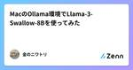
MacのOllama環境でLlama-3-Swallow-8Bを使ってみた
Zennの「LLM」のフィード
はじめに どんな人向けの記事？ ローカルLLMに興味がある方 Llama-3-Swallow-8BとLlama-3-ELYZA-JP-8Bの比較をしたい方 内容 Macでのollama環境構築 transformerモデルからggufモデル、ollamaモデルを作成する手順 Llama-3-Swallow-8Bの出力例 Llama-3-ELYZA-JP-8Bとの比較 本日、Llama-3-Swallowが公開されました。 https://zenn.dev/tokyotech_lm/articles/f65989d76baf2c 本記事では、前回の記事で購入したMac ...
14時間前
ZedのAssistant PanelでOllamaを使う
Zennの「LLM」のフィード
! 筆者は LLM 周りの知識がかなり乏しいです。何か間違い・アドバイス等ありましたらコメント頂けると非常に助かります！ Zed について 以下の記事で詳しく解説してます！ https://zenn.dev/smartcamp/articles/c421e752119cee Assistant Panel とは VSCode のGitHub Copilot Chatのように IDE 上で生成 AI とチャットができる機能です。 公式より引用 詳細は公式ドキュメントをご覧ください。 https://zed.dev/docs/assistant-panel Assistant...
14時間前
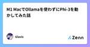
M1 MacでOllamaを使わずにPhi-3を動かしてみた話
Zennの「LLM」のフィード
概要 Phi-3に続きGemma2がリリースされるなど、ローカルで動かせるLLMが増えてきているのでキャッチアップのために触ってみようと思い、M1 Macを使って色々試したお話。 Ollamaでやれば瞬殺だったが、瞬殺すぎたので別の方法でも動かしてみた。 tl;dr mlx-communityが提供しているモデルの利用方法に従えばすぐに動く。 まずはOllamaで動かしてみる OllamaのGitHub Repoを確認すると色々説明が書いてあるので都合が良い方法でセットアップを進める。 https://github.com/ollama/ollama 今回は直接インストールす...
16時間前
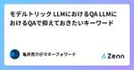
モデルトリック LLMにおけるQA LLMにおけるQAで抑えておきたいキーワード
Zennの「LLM」のフィード
モデルトリックとは LLM（Large Language Models）における「モデルトリック」は、モデルが意図的にプログラムされた動作や制約を回避したり、予期しない方法で動作することを指します。モデルトリックは、品質保証（QA）およびセキュリティの観点からいくつかのリスクをもたらします。以下に詳しく説明します。 QA（品質保証）の観点からのモデルトリック 不安定な出力 モデルトリックによって、モデルは不安定な出力を生成する可能性があります。これは、一貫性のある品質の維持が困難になるため、ユーザー体験に悪影響を与える可能性があります。 テストカバレッジの欠如 モデ...
18時間前
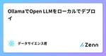
OllamaでOpen LLMをローカルでデプロイ
Zennの「LLM」のフィード
概要 使えるOpen LLMをチェック OllamaでOpen LLMをローカルでデプロイ Web UIを動かす APIで呼び出し ハードウェア MacBook Pro 2021 メモリ：16GB チップ：Apple M1 Pro 使えるモデル一覧 Open LLM leaderboard https://huggingface.co/spaces/open-llm-leaderboard/open_llm_leaderboard デプロイできるモデル一覧 https://ollama.com/library 必要なメモリ 円滑にモデルを動かすために、必要...
19時間前
第3世代の自動運転@CVPR2024 1
Zennの「LLM」のフィード
はじめに Turing 生成AIチームの佐々木 (kento_sasaki1)です。生成AIチームでは、完全自動運転の実現に向けてマルチモーダル基盤モデルの開発に取り組んでいます。 先日、6月17日から6月21日にシアトルで開催されたコンピュータビジョン・機械学習系のトップカンファレンスCVPR 2024に参加し、Vision Language Model (VLM)のワークショップThe 3rd Workshop on Computer Vision in the Wildにて日本語VLM評価ベンチマークHeron-Benchの発表を行いました。 Heron-Benchについては...
20時間前
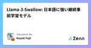
Llama-3-Swallow: 日本語に強い継続事前学習モデル 3
Zennの「LLM」のフィード
はじめに 東京工業大学の藤井です。 本日(2024/07/01) Meta-Llama-3-8BとMeta-Llama-3-70Bから日本語を中心としたコーパスで継続事前学習を行ったLlama-3-Swallow-8B-v0.1、Llama-3-Swallow-70B-v0.1とそのinstructモデルであるLlama-3-Swallow-8B-instruct-v0.1、Llama-3-Swallow-70B-instruct-v0.1をリリースさせていただきました。 このモデルはMeta社のライセンスを踏襲しており、商用利用が可能です。 本モデルの開発は、産総研、東京工業大学 ...
21時間前
ローカルLLMのための最適なGPU選定：Mac Studio購入の決め手
Zennの「LLM」のフィード
はじめに どんな人向けの記事？ ローカルLLMに興味がある方 ローカルLLM向けにGPUの購入を検討している方 内容 本記事では、ローカルLLMの推論に向いているGPUの選定を行います。 タイトルにある通り、結論から言うと私はM2 Ultra搭載のMac Studioを購入しました。 なぜ私が60万円以上もするMac Studioを購入するに至ったのか？その経緯を書き留めています。 検討項目 ローカルLLMの推論向けに最適なGPUは何か？ 今後のGPU販売計画も考慮して、今買うべきか待つべきか？ Mac Studioを購入する際の具体的なスペックはどうすべきか？ ...
1日前
静的サイトに対する検索にWebブラウザで動作する LLM の利用を試す 2
Zennの「LLM」のフィード
はじめに ライブラリのドキュメントサイトなどはコンテンツが静的であるため、GitHub Pages など安価なサービスを利用して、静的サイトとして実装することが多い。 一方で、利用者が求める情報にいち早く到達するためには、静的コンテンツに対する検索機能が有効だが、これは動的な機能だ。 そこで、pagefind などは、バックエンドサーバを持たずに静的なサイトを検索する機能を提供してくれる。これらはビルドされた静的コンテンツからインデックスデータを生成し、これをサイトと一緒にデプロイすることで、利用者の環境で検索を実行する。 この機能を利用することで、ユーザは自身の興味のある情報が掲載...
2日前
小説家全員猫にしてみた
Zennの「LLM」のフィード
はじめに 畑田です。 LangChainを使って青空文庫の文章を猫にしてみました。 コード 以下が実際に書いたコードです。めっちゃ短いです。 import { config } from 'dotenv' import { ChatGoogleGenerativeAI } from '@langchain/google-genai' import { HarmBlockThreshold, HarmCategory } from '@google/generative-ai' import { createInterface } from 'readline/promises' ...
2日前
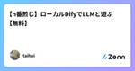
【n番煎じ】ローカルDifyでLLMと遊ぶ【無料】
Zennの「LLM」のフィード
ローカルDifyでLLMと遊ぶ in Linux はじめに Linux環境でDifyのサーバを立ち上げ，LLMと遊ぶ環境を構築します． DifyはオープンソースのLLMアプリ開発アプリケーションです．チャットボットや論文要約アプリなどが手軽に開発できます． 今回は手元のLinuxマシンで立ち上げたサーバに対してWindows PCからアクセスすることを想定しています． 環境構築例 今回構築する環境は以下の通りです． OS：Linux（Ubuntu 22.0.4） LLM：Groq（2024年6月現在はβ版のため無料） サーバ：適当なLinux OSのマシン（今回はRaspb...
2日前
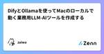
DifyとOllamaを使ってMacのローカルで動く業務用LLM-AIツールを作成する 3
Zennの「LLM」のフィード
はじめに この記事はDifyを使った業務用AIツールの開発方法をまとめたものです。 Macのローカル環境上でテキスト分類器を作成することをゴールとしており、 環境構築から実装までを初心者向けに最初から解説しています。 環境構築 モデルの入手 モデルは商用利用可能なElyzaを利用します。 公式が量子化(軽量化)済みのGGUF版を提供してくださっているのでそちらを使用します。 以下のURLのFiles and Versionsからggufファイルをダウンロードしておいてください。 https://huggingface.co/elyza/Llama-3-ELYZA-JP-8B-...
2日前
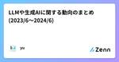
LLMや生成AIに関する動向のまとめ(2023/6〜2024/6)
Zennの「LLM」のフィード
LLM/GenAIの動向まとめ2023/6-2024/6 以下の記事は生成AIによる文章生成を含むため、誤った内容を含む場合があります。 最新の発表されたモデルの情報 期間：2023/6/1～2024/6/30 モデルの名前 発表機関 発表年月日 モデルのサイズ モデルの概要 モデルの特徴 新しくできるようになったこと 記載されたサイトや論文のタイトル URL Falcon 180B Technology Innovation Institute (TII) 2024/06/01 180 billion Falcon 40Bのアップグレード版。様々なタスク（推論...
2日前
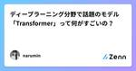
ディープラーニング分野で話題のモデル「Transformer」って何がすごいの？📚
Zennの「LLM」のフィード
こんにちは！テクニカルディレクター集団「BASSDRUM」のnaruminです。 先日AIの歴史や技術の変遷について社内勉強会を行いました。その時に紹介された「Transformer」というディープラーニングのモデルが何だかすごいということを知り、数理的な理解は難しくとも凄さを理解するために調べてみました。「Transformerって聞いたことあるけど一体何？」と思ってる方に役立てると嬉しいです。 1. Transformerモデルとは Transformerは、2017年にGoogleの研究者らによって発表された機械学習モデルで、自然言語処理（NLP）の分野で革命を起こしました。そ...
3日前
AI PC で夢を描く
Zennの「LLM」のフィード
この記事は、Medium に公開されている「Paint Your Dream with AI PC」の日本語参考訳です。原文は更新される可能性があります。原文と翻訳文の内容が異なる場合は原文を優先してください。 https://medium.com/openvino-toolkit/paint-your-dream-with-ai-pc-e0c35cbeca9f この記事の PDF 版は下記からご利用になれます。 https://www.isus.jp/wp-content/uploads/pdf/openvino_28_paint-your-dream-with-ai-pc.pdf ...
3日前
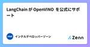
LangChain が OpenVINO™ を公式にサポート
Zennの「LLM」のフィード
この記事は、Medium に公開されている「LangChain Officially Supports OpenVINO™ Now!」の日本語参考訳です。原文は更新される可能性があります。原文と翻訳文の内容が異なる場合は原文を優先してください。 https://medium.com/openvino-toolkit/langchain-officially-supports-openvino-now-a88f75793d84 この記事の PDF 版は下記URLからご利用になれます。 https://www.isus.jp/wp-content/uploads/pdf/openvino_2...
3日前
Anthropic のプロンプトジェネレータを使ってみた
Zennの「LLM」のフィード
Anthropic のプロンプトエンジニアリングを重点に学ぶため https://docs.anthropic.com/en/docs/build-with-claude/prompt-engineering/overview を読んでみようと思います。 ガイドラインの前提 参考のサイトは下記を前提としたドキュメントになっています。 ユースケースの成功基準を明確に定義する これらの基準を経験的にテストする方法 改善したい最初のドラフトプロンプト もし前提に満たない場合は 成功基準の定義 や 強力な実証的評価の作成 を読むとよいとのこと。 プロンプトエンジニアリング手法 プロン...
3日前
Vercel AI SDK useObject: リッチなストリーミングUIを簡単に 1
Zennの「LLM」のフィード
Vercel AI SDK useObject: 効率的なLLMストリーミング処理の実現 Vercel AI SDKのuseObjectフックを使用した経験から、その有用性と開発効率の向上について共有します。 useObjectの概要 useObjectは、Vercel AI SDKが提供するReactフックです。このフックを使用することで、AIからのストリーミングレスポンスをJSONオブジェクトとして簡単に扱うことができ、それを使ってリッチなストリーミングUIを簡単に作ることができます。 たとえば、以下のような UIを 10分で作ることができます。 主な特徴 使用の簡...
4日前
AI に League of Legends の最強新メタビルドを考えてもらいたかった
Zennの「LLM」のフィード
TL;DR AI に League of Legends のビルドを考えてもらって実践したらボコボコに負けました。 対象読者 League of Legends をプレイしている人 LLM に興味がある人 Gemini 1.5 Pro に興味がある人 LLM で大きいデータを楽に扱いたい人 サモナーズリフトへようこそ こんにちは。クラウドエース バックエンドエンジニアリング部 の伊藝です。 みなさんは、League of Legends をプレイされていますか？ League of Legends (LoL) とは、Riot Games が開発した 5 対 5 のマルチプ...
4日前